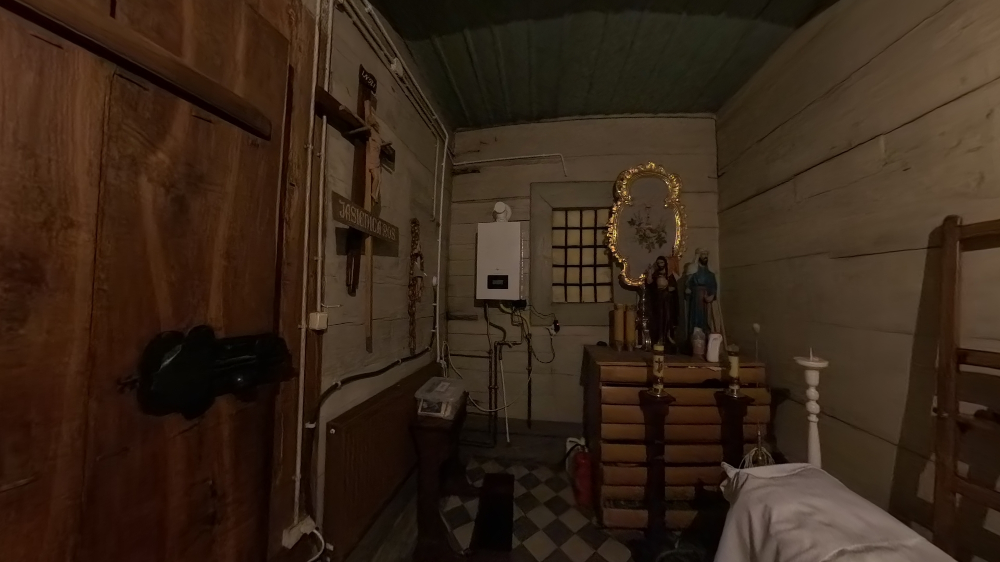

Drewniany kościół w Jasienicy Rosielnej
STRONA GŁÓWNA
MATERIAŁY DODATKOWE
KOŚCIÓŁ - ŚCIEŻKA
OPONA - ŚCIEŻKA
GRÓB - ŚCIEŻKA
CMENTARZ - ŚCIEŻKA
Wejście na górę przez wieżę lewą, organy
Składzik (dawna zakrystia)

Zakrystia
Wieża prawa, w której trzymany jest Boży Grób
Kronika parafialna